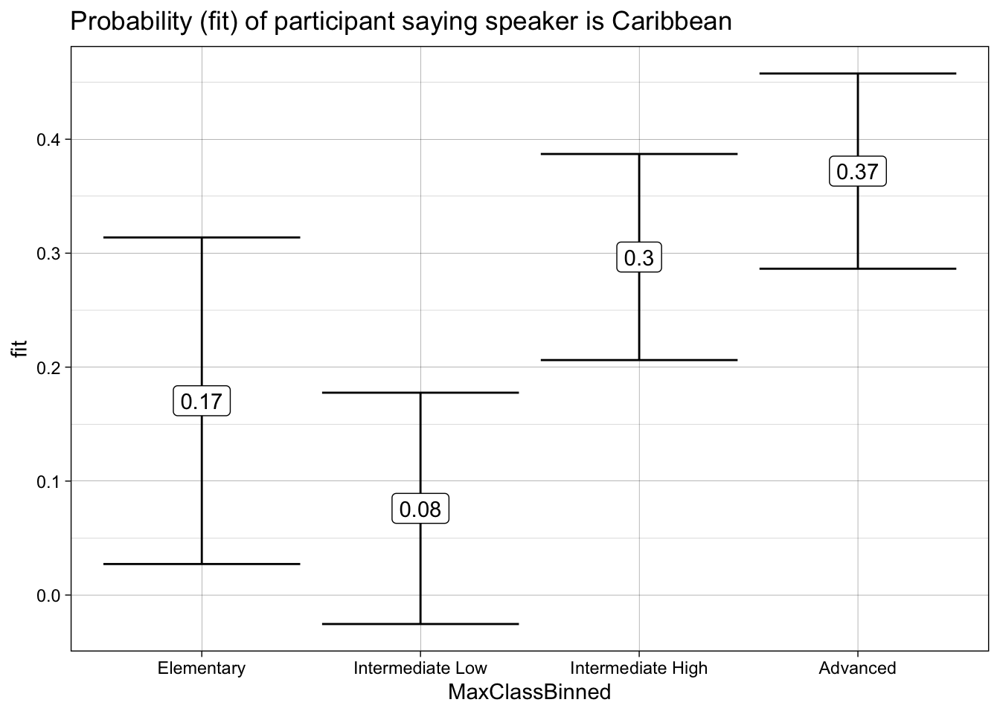

# load library for data analysis
library(tidyverse)Reproducing Open Science Research 3
October 06, 10am to 11am. Register
For this tutorial, we will be replicating some of the analysis in Chappell, W. & Kanwit, M. (2021). Do Learners Connect Sociophonetic Variation with Regional and Social Characteristics? The Case of L2 Perception of Spanish Aspiration. Studies in Second Language Acquisition. 44(1). 1–25.
Data can be found at https://www.iris-database.org/details/MQbI5-rz7z3
Overview of study
- Matched-guise test targeting coda /s/ in Spanish
- Question: Do L2 Spanish learners identify native speakers’ social characteristics based on phonetic variants
Data
Our first step it to load the tidyverse library (RStudio will prompt you to install it).
Now we can read the data in. Remember to download the file and place it in a directory called data in your project.
l2_span_perception <- read_csv("data/L2PerceptionsofAspirationAnonymized.csv")Participants
Seventy-six language learners
We have multiple observations per participants, so to get to number of participants we need to use distinct()
l2_span_perception %>%
distinct(Participant) %>%
nrow()[1] 76Table 1 recreation (page 193):
l2_span_perception %>%
distinct(Participant, Gender) %>%
count(Gender)| Gender | n |
|---|---|
| Female | 55 |
| Male | 21 |
l2_span_perception %>%
distinct(Participant, Age) %>%
summarize(min_age = min(Age),
max_age = max(Age),
mean_age = mean(Age),
median_age = median(Age))| min_age | max_age | mean_age | median_age |
|---|---|---|---|
| 18 | 57 | 23.64474 | 21 |
l2_span_perception %>%
distinct(Participant, Education) %>%
count(Education, sort = TRUE)| Education | n |
|---|---|
| Some college | 43 |
| College graduate | 27 |
| High school | 5 |
| Some high school | 1 |
Research questions
- Are L2-Spanish language learners bale to perceive the social meanings of coda /s/ in their L2?
If so, what social properties will L2 Learners associate with coda [h]?
l2_span_perception %>%
ggplot(aes(x = VariantHeard,
y = PerceivedAge)) +
geom_boxplot()
l2_span_perception %>%
group_by(VariantHeard) %>%
summarize(mean_age = mean(PerceivedAge)) %>%
ggplot(aes(x = VariantHeard,
y = mean_age)) +
geom_col()l2_span_perception %>%
group_by(VariantHeard, SpeakerType, PerceivedSpeakerOrigin) %>%
summarize(count = n()) %>%
mutate(total = sum(count),
percent = round((count/total)*100, 2)) %>%
ggplot(aes(x = PerceivedSpeakerOrigin, y = SpeakerType,
fill = count)) +
geom_tile() +
geom_label(aes(label = paste0(percent, "%")),
fill = "white") +
facet_wrap(~VariantHeard) +
scale_fill_gradient(low = "lightgray" , high = "black")
Factor Analysis
“[…] we conducted an FA and used the Kaiser Rules to establish which properties should be combined and analyzed as joint factors in the model-construction procedure”
For the Factor Analysis we need a data frame with only the indices we will be running on the analysis.
indices <- l2_span_perception %>%
select(Intelligent:Feminine)Now we can run the FA (with 3 factors, since that’s what the authors did).
fa <- factanal(x = indices, factors = 3)
fa
Call:
factanal(x = indices, factors = 3)
Uniquenesses:
Intelligent Hardworking Nice Hispanic Confident DowntoEarth
0.351 0.407 0.536 0.487 0.415 0.303
GoodSpanish Feminine
0.469 0.771
Loadings:
Factor1 Factor2 Factor3
Intelligent 0.200 0.780
Hardworking 0.291 0.680 0.213
Nice 0.176 0.427 0.500
Hispanic 0.698 0.127
Confident 0.647 0.406
DowntoEarth 0.107 0.827
GoodSpanish 0.673 0.258 0.109
Feminine -0.443 -0.160
Factor1 Factor2 Factor3
SS loadings 1.723 1.509 1.028
Proportion Var 0.215 0.189 0.129
Cumulative Var 0.215 0.404 0.533
Test of the hypothesis that 3 factors are sufficient.
The chi square statistic is 56.19 on 7 degrees of freedom.
The p-value is 8.66e-10 Then we inspect the loadings.
fa$loadings
Loadings:
Factor1 Factor2 Factor3
Intelligent 0.200 0.780
Hardworking 0.291 0.680 0.213
Nice 0.176 0.427 0.500
Hispanic 0.698 0.127
Confident 0.647 0.406
DowntoEarth 0.107 0.827
GoodSpanish 0.673 0.258 0.109
Feminine -0.443 -0.160
Factor1 Factor2 Factor3
SS loadings 1.723 1.509 1.028
Proportion Var 0.215 0.189 0.129
Cumulative Var 0.215 0.404 0.533The FA motivated the creation of three combined factors: (a) a status factor (loading for intelligence and work ethic), (b) a confident Spanish-speaker factor (loading for Hispanicity, confidence, and good Spanish), and (c) a solidarity factor (loading for niceness and humility). As no other factors appeared to be correlated, they were explored independently.
Regression models
Mixed-effects regression models were then created using the lme4 (Bates et al., Reference Bates, Maechler, Bolker and Walker2017) and lmerTest (Kuznetsova et al., Reference Kuznetsova, Brockhoff and Christensen2016) packages in R (R Core Team, 2018), and individual models were fitted to the following dependent variables: (a) status (intelligence/work ethic), (b) confident Spanish speaker (Hispanicity/confidence/good Spanish), (c) solidarity (niceness/humility), (d) age, (e) femininity, and (f) perceived speaker origin. Treatment contrasts were used, and the random effects in each model included the listener and the presentation order of the stimuli.
The independent variables tested in each model include variant ([s] or [h]), speaker type (Mexican or Puerto Rican), having taken a phonetics class (yes or no), most advanced Spanish class taken divided into four collapsed categories (elementary, intermediate low, intermediate high, and advanced), number of weeks spent studying abroad (continuous), experience abroad with an aspirating variety (yes or no), whether participants use Spanish regularly with NSs (yes or no), whether participants use Spanish regularly at work (yes or no), whether participants listen regularly to Spanish media (e.g., shows, podcasts, movies, music [yes or no]), listener age (continuous), and listener gender (man, woman, or other).
dependent variable: status (intelligence/work ethic)
l2_span_perception <- l2_span_perception %>%
mutate(dep_status = Intelligent + Hardworking)library(lme4)
library(lmerTest)
model_status <- lmer(dep_status ~ VariantHeard + SpeakerType + PhoneticsClass +
MaxClassBinned + WeeksAbroad + AspirationContact +
UseWithNSs + UseAtWork + UseListeningToMedia + Age +
Gender + (1|Participant) + (1|AudioNumber),
data = l2_span_perception)
step_model_status <- step(model_status)
step_model_statusBackward reduced random-effect table:
Eliminated npar logLik AIC LRT Df Pr(>Chisq)
<none> 17 -1273.4 2580.8
(1 | Participant) 0 16 -1378.3 2788.6 209.844 1 < 2.2e-16 ***
(1 | AudioNumber) 0 16 -1284.0 2600.0 21.204 1 4.129e-06 ***
---
Signif. codes: 0 '***' 0.001 '**' 0.01 '*' 0.05 '.' 0.1 ' ' 1
Backward reduced fixed-effect table:
Degrees of freedom method: Satterthwaite
Eliminated Sum Sq Mean Sq NumDF DenDF F value Pr(>F)
Gender 1 0.0623 0.0623 1 64.000 0.0474 0.8283
VariantHeard 2 0.1440 0.1440 1 7.000 0.1096 0.7503
Age 3 0.1393 0.1393 1 65.000 0.1060 0.7458
UseListeningToMedia 4 2.3116 2.3116 1 66.000 1.7593 0.1893
SpeakerType 5 2.9501 2.9501 1 8.000 2.2453 0.1724
UseAtWork 6 2.6552 2.6552 1 67.000 2.0209 0.1598
WeeksAbroad 7 2.9120 2.9120 1 67.999 2.2163 0.1412
UseWithNSs 8 2.2384 2.2384 1 68.998 1.7036 0.1962
PhoneticsClass 9 3.5431 3.5431 1 70.000 2.6967 0.1050
AspirationContact 10 3.4437 3.4437 1 71.000 2.6210 0.1099
MaxClassBinned 11 10.3315 3.4438 3 72.000 2.6211 0.0572 .
---
Signif. codes: 0 '***' 0.001 '**' 0.01 '*' 0.05 '.' 0.1 ' ' 1
Model found:
dep_status ~ (1 | Participant) + (1 | AudioNumber)model_status_2 <- lmer(dep_status ~ VariantHeard + PhoneticsClass +
VariantHeard:PhoneticsClass +
MaxClassBinned + (1|Participant) + (1|AudioNumber),
data = l2_span_perception)
summary(model_status_2)Linear mixed model fit by REML. t-tests use Satterthwaite's method [
lmerModLmerTest]
Formula:
dep_status ~ VariantHeard + PhoneticsClass + VariantHeard:PhoneticsClass +
MaxClassBinned + (1 | Participant) + (1 | AudioNumber)
Data: l2_span_perception
REML criterion at convergence: 2540.6
Scaled residuals:
Min 1Q Median 3Q Max
-4.1648 -0.4831 0.0043 0.5349 3.3504
Random effects:
Groups Name Variance Std.Dev.
Participant (Intercept) 0.94126 0.9702
AudioNumber (Intercept) 0.09798 0.3130
Residual 1.31438 1.1465
Number of obs: 760, groups: Participant, 76; AudioNumber, 10
Fixed effects:
Estimate Std. Error df t value Pr(>|t|)
(Intercept) 0.93969 0.26326 48.79329 3.569 0.000815
VariantHeards 0.03584 0.21773 8.45553 0.165 0.873137
PhoneticsClassYes -0.65228 0.36181 87.41817 -1.803 0.074864
MaxClassBinnedElementary -1.11418 0.42631 71.00059 -2.614 0.010932
MaxClassBinnedIntermediate High 0.17895 0.29424 71.00059 0.608 0.545003
MaxClassBinnedIntermediate Low -0.34794 0.32749 71.00059 -1.062 0.291635
VariantHeards:PhoneticsClassYes 0.19766 0.22810 674.00008 0.867 0.386480
(Intercept) ***
VariantHeards
PhoneticsClassYes .
MaxClassBinnedElementary *
MaxClassBinnedIntermediate High
MaxClassBinnedIntermediate Low
VariantHeards:PhoneticsClassYes
---
Signif. codes: 0 '***' 0.001 '**' 0.01 '*' 0.05 '.' 0.1 ' ' 1
Correlation of Fixed Effects:
(Intr) VrntHr PhntCY MxClBE MxCBIH MxCBIL
VariantHrds -0.414
PhntcsClssY -0.342 0.052
MxClssBnndE -0.425 0.000 0.198
MxClssBnnIH -0.529 0.000 0.046 0.327
MxClssBnnIL -0.553 0.000 0.258 0.341 0.426
VrntHrd:PCY 0.068 -0.165 -0.315 0.000 0.000 0.000anova(model_status_2)| Sum Sq | Mean Sq | NumDF | DenDF | F value | Pr(>F) | |
|---|---|---|---|---|---|---|
| VariantHeard | 0.4566423 | 0.4566423 | 1 | 10.24927 | 0.3474209 | 0.5683413 |
| PhoneticsClass | 3.4147173 | 3.4147173 | 1 | 71.00059 | 2.5979723 | 0.1114373 |
| MaxClassBinned | 12.9231579 | 4.3077193 | 3 | 71.00059 | 3.2773827 | 0.0258835 |
| VariantHeard:PhoneticsClass | 0.9870502 | 0.9870502 | 1 | 674.00008 | 0.7509638 | 0.3864796 |
library(MuMIn)
r.squaredGLMM(model_status_2) R2m R2c
[1,] 0.06094177 0.4755826speakers’ perceived place of origin (Caribbean vs. other)
Table 2 replication
l2_span_perception <- l2_span_perception %>%
mutate(origin_dep = if_else(PerceivedSpeakerOrigin == "Caribbean", 1, 0),
VariantHeard = factor(VariantHeard, levels = c("s", "h")))
model_origin <- lmer(origin_dep ~ VariantHeard + PhoneticsClass +
VariantHeard:PhoneticsClass +
MaxClassBinned + (1|Participant) + (1|AudioNumber),
data = l2_span_perception)
summary(model_origin)Linear mixed model fit by REML. t-tests use Satterthwaite's method [
lmerModLmerTest]
Formula:
origin_dep ~ VariantHeard + PhoneticsClass + VariantHeard:PhoneticsClass +
MaxClassBinned + (1 | Participant) + (1 | AudioNumber)
Data: l2_span_perception
REML criterion at convergence: 717.9
Scaled residuals:
Min 1Q Median 3Q Max
-2.2038 -0.5766 -0.2064 0.3768 2.7826
Random effects:
Groups Name Variance Std.Dev.
Participant (Intercept) 0.025294 0.15904
AudioNumber (Intercept) 0.004444 0.06666
Residual 0.129384 0.35970
Number of obs: 760, groups: Participant, 76; AudioNumber, 10
Fixed effects:
Estimate Std. Error df t value Pr(>|t|)
(Intercept) 0.28275 0.05281 33.89773 5.354 6.02e-06
VariantHeardh 0.13750 0.05085 8.85226 2.704 0.0246
PhoneticsClassYes -0.08467 0.07404 119.68607 -1.144 0.2551
MaxClassBinnedElementary -0.20150 0.08048 70.99993 -2.504 0.0146
MaxClassBinnedIntermediate High -0.07540 0.05555 70.99993 -1.357 0.1790
MaxClassBinnedIntermediate Low -0.29595 0.06183 70.99993 -4.787 8.96e-06
VariantHeardh:PhoneticsClassYes 0.42917 0.07156 674.00004 5.997 3.28e-09
(Intercept) ***
VariantHeardh *
PhoneticsClassYes
MaxClassBinnedElementary *
MaxClassBinnedIntermediate High
MaxClassBinnedIntermediate Low ***
VariantHeardh:PhoneticsClassYes ***
---
Signif. codes: 0 '***' 0.001 '**' 0.01 '*' 0.05 '.' 0.1 ' ' 1
Correlation of Fixed Effects:
(Intr) VrntHr PhntCY MxClBE MxCBIH MxCBIL
VariantHrdh -0.481
PhntcsClssY -0.330 0.107
MxClssBnndE -0.400 0.000 0.183
MxClssBnnIH -0.498 0.000 0.043 0.327
MxClssBnnIL -0.520 0.000 0.238 0.341 0.426
VrntHrd:PCY 0.107 -0.222 -0.483 0.000 0.000 0.000anova(model_origin)| Sum Sq | Mean Sq | NumDF | DenDF | F value | Pr(>F) | |
|---|---|---|---|---|---|---|
| VariantHeard | 5.2451299 | 5.2451299 | 1 | 12.36777 | 40.539246 | 0.0000311 |
| PhoneticsClass | 0.5196316 | 0.5196316 | 1 | 70.99993 | 4.016197 | 0.0488812 |
| MaxClassBinned | 3.1974421 | 1.0658140 | 3 | 70.99993 | 8.237603 | 0.0000890 |
| VariantHeard:PhoneticsClass | 4.6530702 | 4.6530702 | 1 | 674.00004 | 35.963258 | 0.0000000 |
r.squaredGLMM(model_origin) R2m R2c
[1,] 0.184729 0.3370942To clarify this rather complex relationship, a conditional inference tree is provided in Figure 2.
Oh no
library(effects)
library(ggthemes)
effect("VariantHeard:PhoneticsClass", model_origin) %>%
data.frame() %>%
ggplot(aes(x = PhoneticsClass,
y = fit,
ymin = lower,
ymax = upper,
color = VariantHeard)) +
geom_errorbar() +
geom_label(aes(label = round(fit, 2))) +
theme_linedraw() +
scale_color_colorblind() +
labs(title = "Probability (fit) of participant hearing /s/")library(effects)
library(ggthemes)
effect("MaxClassBinned", model_origin) %>%
data.frame() %>%
mutate(MaxClassBinned = factor(MaxClassBinned,
levels = c("Elementary",
"Intermediate Low",
"Intermediate High",
"Advanced"))) %>%
ggplot(aes(x = MaxClassBinned,
y = fit,
ymin = lower,
ymax = upper)) +
geom_errorbar() +
geom_label(aes(label = round(fit, 2))) +
theme_linedraw() +
labs(title = "Probability (fit) of participant hearing /s/")
Conditional Inference Trees
library(partykit)
l2_span_perception <- l2_span_perception %>%
mutate(VariantHeard = factor(VariantHeard),
PhoneticsClass = factor(PhoneticsClass),
MaxClassBinned = factor(MaxClassBinned),
PerceivedSpeakerOrigin = factor(PerceivedSpeakerOrigin))
ctree_model = ctree(PerceivedSpeakerOrigin ~ VariantHeard + PhoneticsClass + MaxClassBinned,
data = l2_span_perception)
plot(ctree_model)